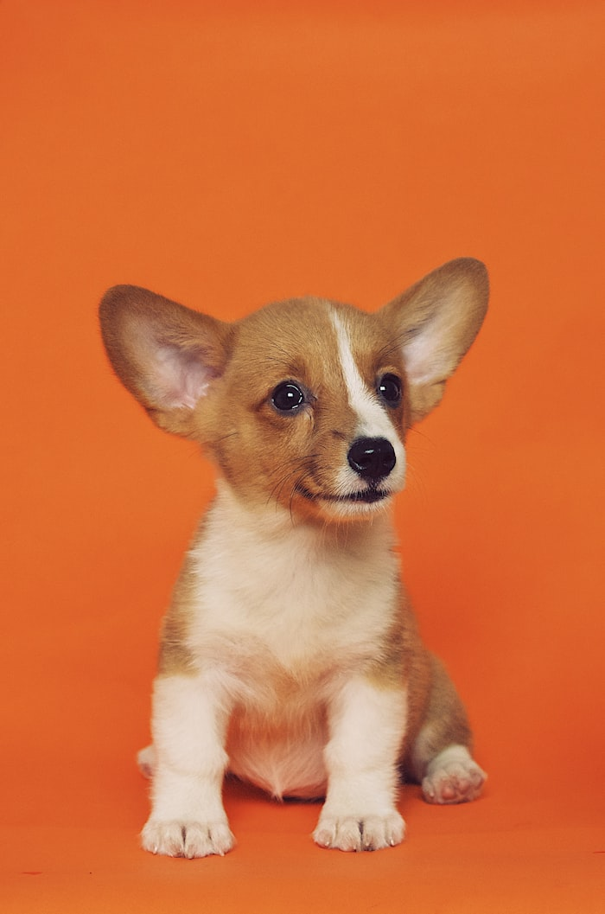
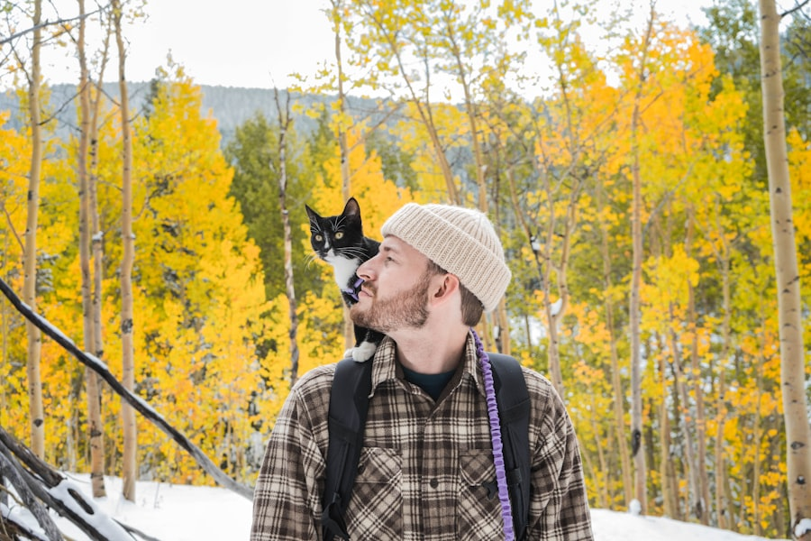
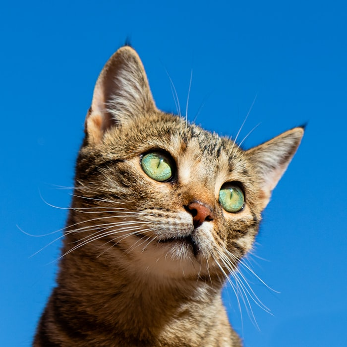
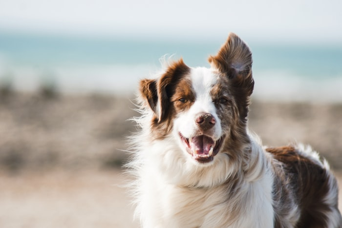

DogBella
Bella is bright, loud when she is excited, and very sweet with kids. She would suit a family who likes walks and has a bit of patience for zoomies.
Read moreHappy Paws Pet Adoption rescues homeless cats and dogs, cares for them in foster homes, and matches them with people who are ready to love them properly.

pets waiting now
foster volunteers
years helping animals
good home can change everything
These animals are ready for a new start. Some are playful, some are shy, and some just want a couch and a person.

DogBella is bright, loud when she is excited, and very sweet with kids. She would suit a family who likes walks and has a bit of patience for zoomies.
Read more
CatOliver likes windows, soft blankets, and pretending he does not need attention. He does tho. He is calm with other cats.
Read more
DogMax is still learning manners, but he is clever and loves food puzzles. He needs someone who can help him grow up good.
Read moreWe do ask questions, because the match matters. But we keep the process clear so first-time visitors know what is happening next.
Read each pet profile and think honestly about your home.
Tell us who you are interested in and ask any questions.
We arrange a meet and greet before any final decision.
You can still help by fostering, sharing pet profiles, donating supplies, or visiting an adoption day. It all adds up.
Contact the team